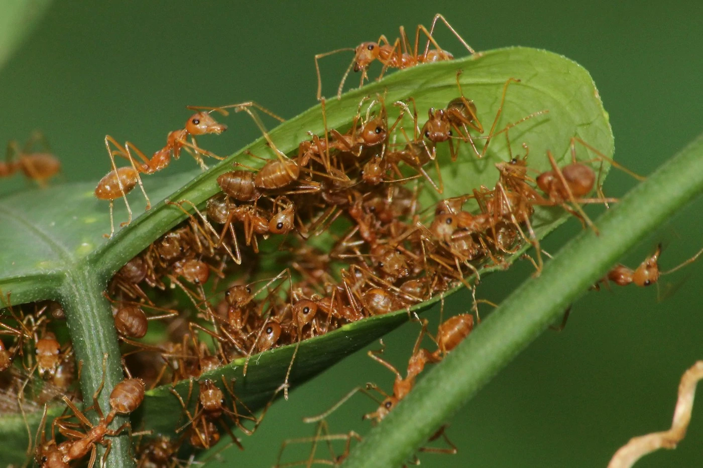

Redonner du sens et de la qualité à l'animation : Former des équipes d'animation compétentes, passionnées et armées face aux réalités du terrain, en valorisant le savoir-faire concret et la sécurité globale plutôt que des approches purement théoriques.
Une place pour chacun.
Une force commune.

Photo : Dibakar Roy / Unsplash
Notre histoire
Pourquoi existe-on ?
Fourmi’Action existe pour répondre à un constat simple : encadrer des enfants et des jeunes n'est ni une garderie ni un simple travail d'appoint, c'est une mission d'intérêt général essentielle pour construire les citoyens de demain.
Notre raison d'être s'articule autour de quatre engagements fondamentaux :
Association d’éducation populaire à but non lucratif, Fourmi’Action inscrit son action en Centre-Val de Loire et dans la métropole d’Orléans.
Développer le pouvoir d'agir de chacun : Permettre à chaque personne, quel que soit son parcours, son âge ou son origine, de cesser d'être un simple spectateur pour devenir actrice de sa propre vie et de la société.
Faire vivre « l'esprit fourmi » au quotidien : Démontrer par la pratique qu'un groupe solidaire, diversifié et bienveillant produit des réponses collectives plus riches qu'un individu isolé, dans le respect strict des principes républicains et de laïcité.
Offrir des espaces de vie sécurisants et émancipateurs : Proposer aux enfants et aux adolescents des accueils de loisirs, des séjours et des animations de quartier conçus comme de véritables laboratoires de démocratie, de créativité et de coopération.
Nos 14 valeurs
Un cadre commun à nos formations, nos interventions et notre vie associative.
Intelligence collectiveSolidaritéInclusionRespectBienveillanceIntégritéÉgalitéProgressionResponsabilisationPouvoir d’agirValorisationExigenceInnovationAmélioration continue
Une vie associative participative
Le projet éducatif de Fourmi’Action défend une gestion transparente et une place réelle pour les jeunes dans les décisions.
Échanger sur un engagement bénévoleTémoignages
TÉMOIGNAGE À VENIR ...
TÉMOIGNAGE À VENIR ...
TÉMOIGNAGE À VENIR ...
GALERIE

{kind=link}
{kind=link}
{kind=link}
{kind=link}
{kind=link}
On en parle ?Une question, un projet,
Échangeons ensemble